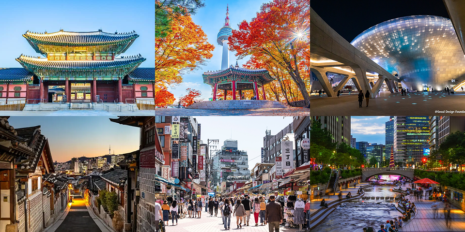
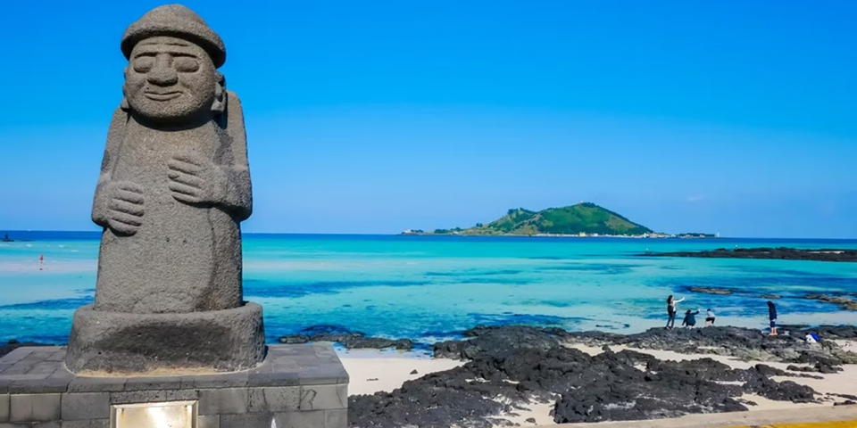
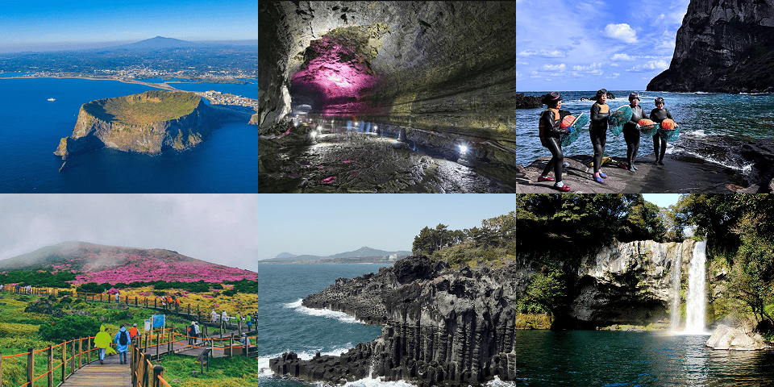
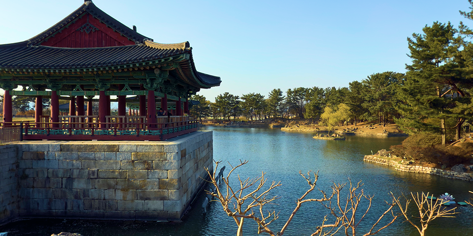
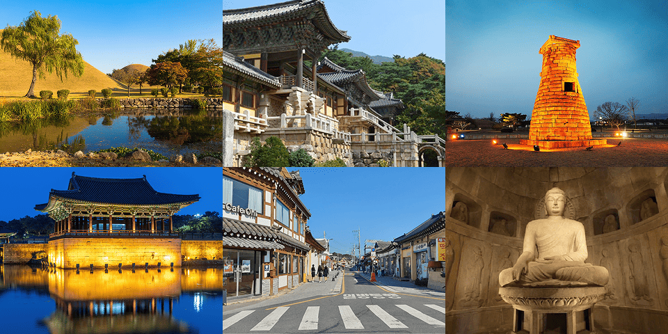

Destinos
Seoul: tradición y modernidad en armonía

La vibrante capital de Corea del Sur y una de las ciudades más dinámicas del mundo. Reconocida por combinar tecnología avanzada con profundas raíces culturales, la ciudad ofrece un contraste fascinante entre rascacielos futuristas, palacios reales, barrios tradicionales y naturaleza urbana. Cada rincón de Seoul revela una faceta distinta de su historia milenaria y su espíritu innovador.es una metrópoli que combina lo antiguo y lo moderno. Desde el Palacio Gyeongbokgung hasta el bullicioso mercado de Myeongdong, hay algo para todos.
 Gyeongbokgung Palace
Gyeongbokgung Palace- Namsan Seoul Tower
- Dongdaemun Design Plaza
- Bukchon Hanok Village
- Hongdae District
- Cheonggyecheon Stream

Busan: mar, montañas y tradición costera

Es la segunda ciudad más grande de Corea del Sur y un destino que combina playas amplias, templos históricos y montañas que abrazan el mar. Con un ambiente más relajado que Seoul, esta ciudad portuaria se destaca por su espíritu costero, su gastronomía —especialmente los platos con mariscos frescos— y su encanto natural. Busan es el lugar ideal para disfrutar de la tranquilidad del océano sin dejar de vivir la cultura coreana en su máxima expresión.
- Gamcheon Culture Village
- Jagalchi Fish Market
- Beomeosa Temple
- Gwangalli Beach
- Songdo Skywalk
- Hwangyeongsan Observatory

Jeju: naturaleza volcánica y calma isleña

una isla paradisíaca al sur de Corea del Sur, conocida por sus paisajes volcánicos, playas de aguas cristalinas y un ambiente tranquilo ideal para desconectar. Declarada Patrimonio Natural de la Humanidad, combina cráteres, cuevas de lava, cascadas y laderas verdes que caen al mar. Es un destino perfecto para disfrutar de la naturaleza, hacer trekking y descubrir la cultura isleña, marcada por tradiciones únicas como las haenyeo, las famosas buceadoras que pescan a pulmón.
- Seongsan Ilchulbong (Sunrise Peak)
- Manjanggul Cave
- Museo de las Haenyeo
- Hallasan National Park
- Jusangjeolli Cliffs
- Cheonjiyeon Waterfall

Gyeongju: la capital histórica de Corea

Conocida como "el museo sin paredes", Gyeongju fue la capital del antiguo Reino de Silla y alberga una impresionante cantidad de sitios históricos y culturales. La ciudad está salpicada de tumbas reales, templos budistas, palacios y artefactos que narran la rica historia de Corea. Pasear por Gyeongju es como viajar en el tiempo, ofreciendo una experiencia única para los amantes de la historia y la cultura que desean explorar el legado de una de las civilizaciones más antiguas de Asia.
- Parque de Tumuli de Daereungwon
- Templo Bulguksa
- Observatorio Cheomseongdae
- Palacio Donggung y Estanque Wolji
- Hwangnidangil Street
- Gruta Seokguram
